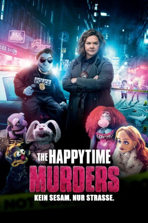

#10848 The Happytime Murders
 gesehen am 10.03.2019
gesehen am 10.03.2019
 
 IMDB-Wertung: 5.3 / 10
IMDB-Wertung: 5.3 / 10  Metascore: 27
Metascore: 27 
In einer Welt in der Puppen als 'Menschen' zweiter Klasse mit eben diesen koexistieren, ist der Privatdetektiv und Ex-Cop Phil Phillips auf der Jagd nach einem Mörder, der bereits seinen Bruder auf dem Gewissen hat. Aktuell hat der Verbrecher es auf die Darsteller der berühmten 80'er Jahre Fernsehshow "The Happytime Gang" abgesehen und killt ein Ensemblemitglied nach dem anderen. Phil sorgte zwar mit einem Fehler einst dafür, dass sämtliche Puppen vom Polizeidienst ausgeschlossen wurden, doch nun sind die Cops auf sein Insiderwissen angewiesen. Bei den Ermittlungen im düster-versauten Milieu der Puppen stellen Connie und Phil bald fest, dass es der Killer auch auf Phils Ex-Freundin Jenny (Elizabeth Banks) abgesehen hat...
Jahr: 2018
Dauer: 91 Minuten
FSK: 12
Land: USA Studio: STX EntertainmentTonspuren: DTS - ,
Untertitel: Deutsch, Englisch,
Auflösung: 1080p (1920x800) Größe: 8673 MB
Genre: Action, Thriller, Komödie, Krimi, Mystery
Regisseur: Brian Henson
Drehbuch: Todd Berger, Todd Berger, Dee Austin Robertson
Soundtrack: Christopher Lennertz
Darsteller:
 Melissa McCarthy als Detective Connie Edwards
Melissa McCarthy als Detective Connie Edwards Elizabeth Banks als Jenny
Elizabeth Banks als Jenny Maya Rudolph als Bubbles
Maya Rudolph als Bubbles- Leslie David Baker als Lt. Banning
 Joel McHale als Agent Campbell
Joel McHale als Agent Campbell- Cynthy Wu als Brittenie Marlowe
 Michael McDonald als Ronovan Scargle
Michael McDonald als Ronovan Scargle Mitch Silpa als Tommy
Mitch Silpa als Tommy Hemky Madera als Tito
Hemky Madera als Tito- Brekkan Spens als Dick
- Ryan Tran als Phil
- Fortune Feimster als Robin
 Brian Palermo als Paramedic
Brian Palermo als Paramedic Ryan Gaul als Officer Milligan
Ryan Gaul als Officer Milligan Jimmy O. Yang als Officer Delancey
Jimmy O. Yang als Officer Delancey Dennis Keiffer als Junior
Dennis Keiffer als Junior Jim Palmer als Caesar
Jim Palmer als Caesar- Michael Croner als Jack Cook
- Barry Rothbart als Fireman
- Jaye Razor als Razor
 Jen Sung als Sandra's Bodyguard
Jen Sung als Sandra's Bodyguard Brett Wagner als Rio
Brett Wagner als Rio- Colleen Smith als Carol / Dalmatian / Cara
 Ben Falcone als Donny
Ben Falcone als Donny Bill Barretta als Phil Philips / Junkyard / Boar
Bill Barretta als Phil Philips / Junkyard / Boar- Dorien Davies als Sandra
 Kevin Clash als Bumblypants / Lyle
Kevin Clash als Bumblypants / Lyle- Victor Yerrid als Larry / Old Man Puppet
 Drew Massey als Goofer / Vinny
Drew Massey als Goofer / Vinny- Ted Michaels als Sexist Thug / Ezra
 Brian Henson als Crab
Brian Henson als Crab- Donna Kimball als Roxy / Cow / Rotten Cotton Girl
- Patty Guggenheim als Roxy
- Alice Dinnean als Rotten Cotton Girl
 Allan Trautman als Octopus / Puppet Doctor
Allan Trautman als Octopus / Puppet Doctor- Grant Baciocco als Fishlike Businessman (uncredited)
- Allison Bills als Carol (uncredited)
- J.E. Burton als Beach Goer (uncredited)
- Billy Concha als Cop on Phone (uncredited)
- Neo Edmund als EMT #2 (uncredited)
- Mike Egbert als Sweet Corn Vendor (uncredited)
- Apollo Garza als Emergency Medical Technician (uncredited)
- Dan Garza als Beaver (uncredited)
- Thelma Gudmunds als Beach Goer (uncredited)
- Harvey B. Jackson als Pedestrian (uncredited)
- Joseph Luckay als Street Kid (uncredited)
- Ryan McEnaney als Bodyguard (uncredited)
- Pamela Mitchell als Topaz (uncredited)
- Antonio Rosa als Beach Goer #46 (uncredited)
 Dana Schick als Pretty Girl (uncredited)
Dana Schick als Pretty Girl (uncredited)
Datei: X:\2018(G-M)\Happytime Murders, The (2018, FSK12, 1920x800).mkv seit 10.03.2019
Festplatte: HD 2018(G-Z)-2019(A-Z)
 Es gibt insgesamt 138 Filme in der Gruppe '2018(G-M)'
Es gibt insgesamt 138 Filme in der Gruppe '2018(G-M)'